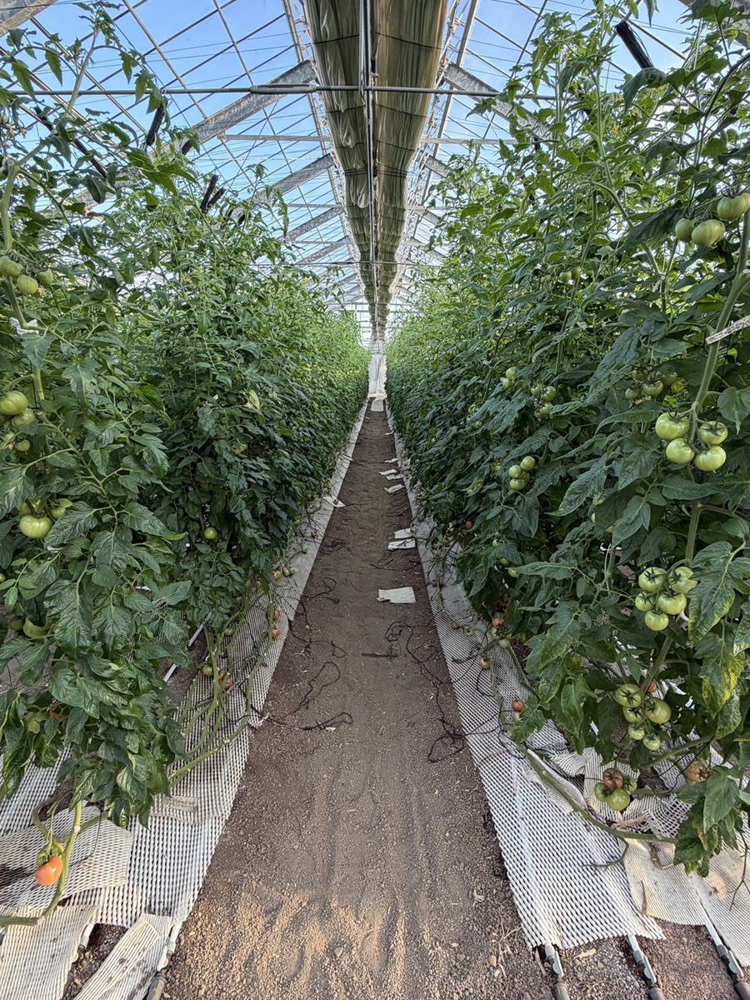
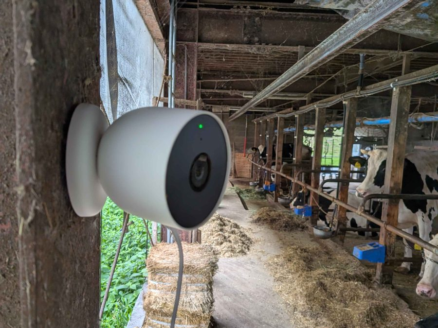
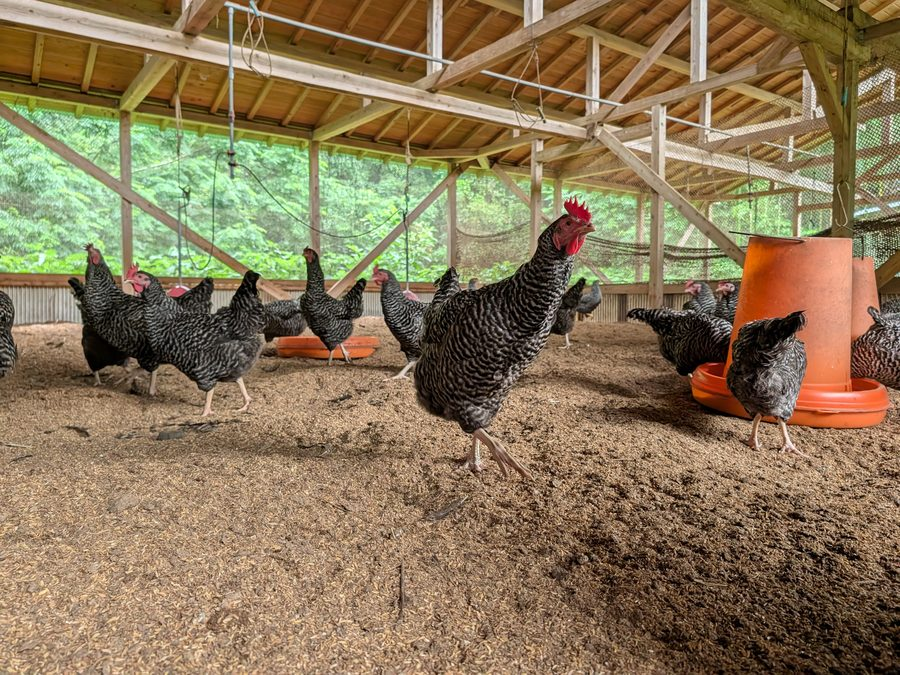
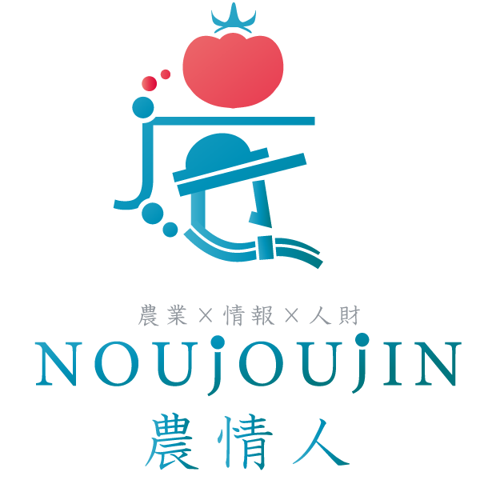
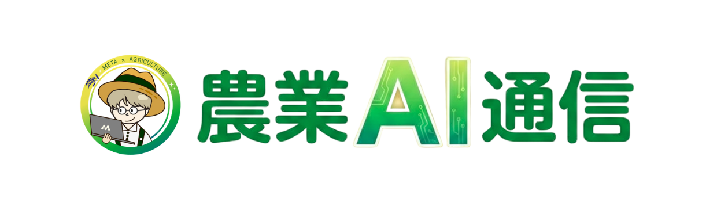
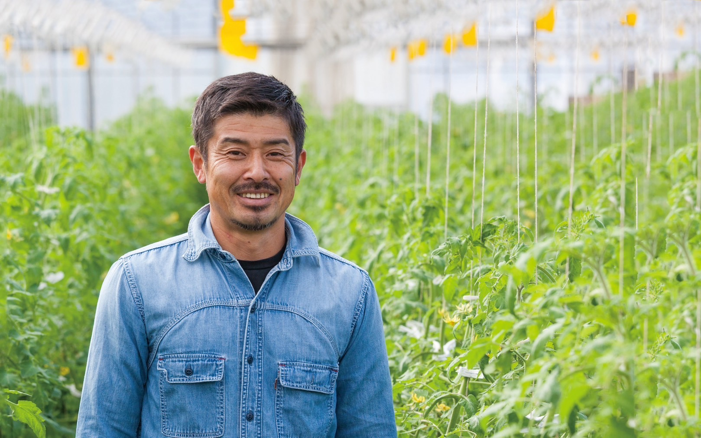
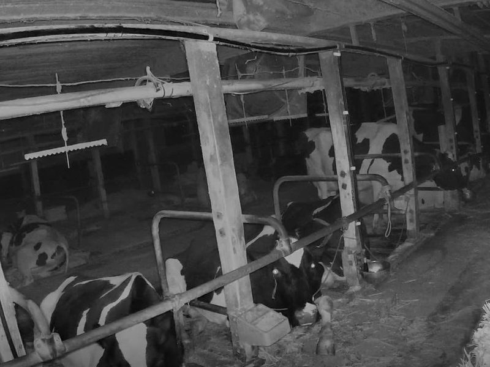
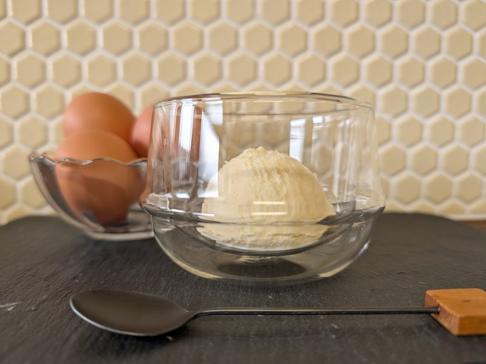
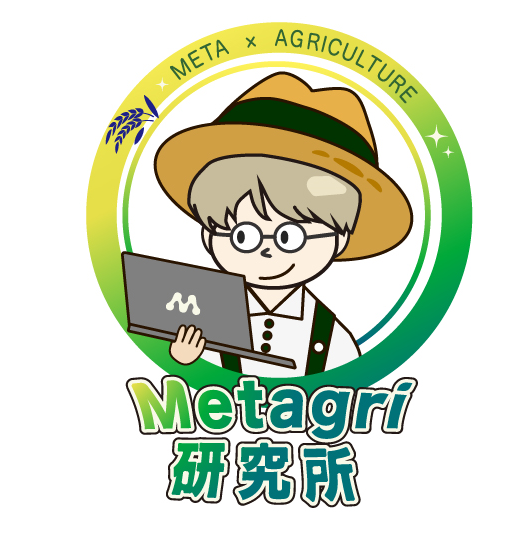

決めるのは、
いつも自分ひとり。
作付けも、値付けも、投資も。相談できる相手がいないまま決めている。
農家のAI経営参謀づくり支援｜3農園まで・3か月
あなたの経営の悩み、もう一人で抱えない。
「AIの経営参謀」とは、あなたの農園の数字・方針・作業の暦を覚えた、経営の相談相手になるAIのこと。
3か月で一緒につくり、終わったあともあなたの手元に残ります。
登録内容を確認・審査してご案内します。登録時点では契約になりません。



農業AI通信で取材してきた現場から


01YOUR WORRIES
AIのことより、まずは経営のことから。
今の悩みを、一緒に整理しましょう。
作付けも、値付けも、投資も。相談できる相手がいないまま決めている。
日報や原価の数字がたまっても、次の一手につながらない。
目の前の作業に追われて、振り返りと計画が後回しになる。
02WHAT YOU GET
AIの使い方を教えて終わりではなく、
あなたの農園の数字・方針・暦を入れた
相談相手を一緒につくり、
自分で使い続けられる形で手元に残します。
農園プロフィールと初期設定
品目・規模・作業の暦・経営の数字と方針を整理し、AIの参謀に最初に渡す「農園プロフィール」と初期設定をつくります。
相談の流れ（2つほど）
経営の壁打ち、数字を見ながらの検討、日々の段取りの整理。あなたの仕事によく出てくる場面から2つほど選び、参謀への相談の流れを実務で試して整えます。
手順書・振り返り・改善計画
使い方の手順書、3か月の振り返り、次の改善計画をまとめます。支援が終わっても、参謀はあなたの手元に残ります。
相談テーマの例作付けと出荷の計画／原価と値付け／作業日報の振り返り／商品説明・発信の下書き／人手と段取り
033-MONTH PROGRAM
オンラインの定例と、その間の相談で進めます。
農園の数字・方針・暦を整理し、農園プロフィールと参謀の初期設定をつくります。
相談の流れを2つほど、実際の仕事で試します。使いにくいところは、その場で直します。
手順書をまとめ、3か月を振り返り、次の改善計画を立てます。
つくった参謀と手順書は、あなたの手元に残ります。続けての伴走は、ご希望に応じてご相談ください。
定例はオンラインで月2回（各60分程度）。定例の間のご相談はチャットで受け、営業日にお返事します。
04FIELD STORIES
農業AI通信で紹介してきた取り組み。
農園の課題によって、AIの役割も変わります。
農業AI通信 メディアアンバサダーAIの役割：参謀
kamokobuさん / 農業法人での実践
品種別原価や作業日報の見える化を出発点に、AIを経営判断の相談相手に。対話を通じて、何を知りたいのかを言葉にしていきました。
伴走の視点まず、目的を言葉にする。
農業AI通信の記事を読む
FIELD NOTE / 02ひろしま農園 / 現場の一枚農業AI通信 メディアアンバサダーAIの役割：鏡
ひろしま農園さん / 温湿度・積算温度
市販センサーとスプレッドシートで、現場のデータを記録する仕組みづくり。数字を確認しながら、AIにも相談して使い方を広げていく実践です。
伴走の視点現場で確かめながら使う。
農業AI通信の記事を読む伴走支援の事例

目
相棒これまでの取り組みの紹介です。支援内容や到達点は、農園ごとに異なります。経営・数字の図はイメージです。写真は各農園の取材・事例資料のもので、AIの役割（目・鏡・参謀・相棒）は書籍での整理に基づきます。
05HOW TO START
同時にお受けするのは3農園まで。
内容を確認・審査のうえ、ご案内します。
農園のこと、AIの利用状況、今の悩みをフォームでお知らせください。
内容と受け入れ枠を確認し、支援の可否や次の進め方をご連絡します。
30分程度の面談で、農園の状況と3か月で目指すことを伺います。
支援内容と条件に合意し、契約してから3か月の伴走を始めます。
06PRICE
料金は3か月の定額です。
同時にお受けするのは3農園までです。
月5万円（税別）
× 3か月（合計15万円・税別）
生成AIの有料プランの利用料は、農家さまご本人のご契約・ご負担です（ツールやプランにより金額が変わります）。機器やシステムが必要な場合の費用は含みません。
今の状況を相談する07BEFORE YOU START
AIの答えは、判断の材料です。最終的な判断は農家さまご自身が行います。3か月で収まらない作業は、別にお見積もりします。

FARM × AI × PEOPLE農業の現場に、
新しい選択肢を。
08OUR TEAM
農業分野でのAI活用支援と、実践事例の発信に取り組む株式会社農情人が、窓口・契約主体となります。
農業コミュニティ「Metagri研究所」や「農業AI通信」での実践をもとに、農園の仕事に合うAIの使い方を考えます。
09QUESTIONS
はじめる前の気になること。
はい。フォームの利用状況で「使ったことがない」をお選びください。オンラインで面談ができ、経営の数字をご自身で確かめられれば始められます。
つくった参謀と手順書はお手元に残り、ご自身で使い続けられます。続けて伴走を希望される場合は、終了前にご相談ください。内容と条件は、その時点でご相談のうえ決めます。
指定はありません。すでにお使いの生成AIがあれば、それで参謀をつくります。まだ決まっていない場合は、面談で農園の使い方や予算を伺い、合いそうなものをおすすめします（決めるのは農家さまご自身です）。
お使いになる生成AIの有料プランの料金がかかります。ツールやプランによって変わるため、面談でお使いの状況を伺ってご案内します。
税務の相談や申告書の作成は扱いません。税理士にご相談ください。
原則として、支援を受ける農家さま（個人・農業法人）ご本人に、お申し込みとお支払いをお願いしています。
オンラインを中心とした支援を想定しています。対面をご希望の場合は相談内容にご記入ください。地域や内容を確認してご案内します。
中途解約の条件は、契約の前にご説明します。
登録時点では契約になりません。内容を確認・審査し、支援内容と条件に合意してから契約します。
LET’S TAKE THE FIRST STEP
何を相談したいか、まとまっていなくても大丈夫。
今の状況と、気になっていることをお聞かせください。
同時にお受けするのは3農園までです。内容を確認・審査し、支援の可否と次の進め方をご案内します。
フォームを読み込めない場合は、JavaScriptを有効にしてページを再読み込みしてください。
この表示から個人情報の入力・送信はできません。
登録時点では契約になりません。